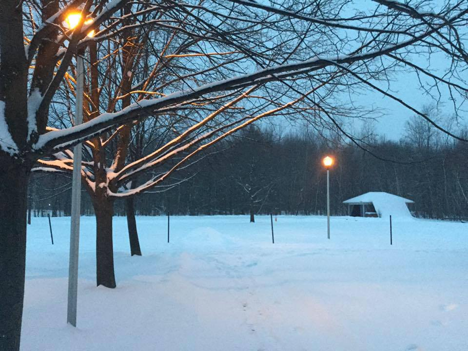
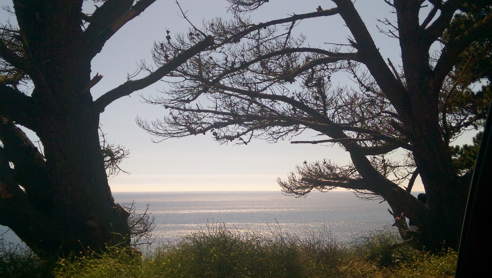
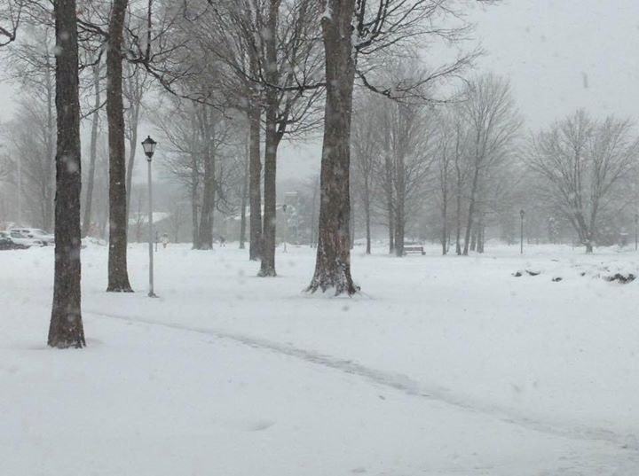
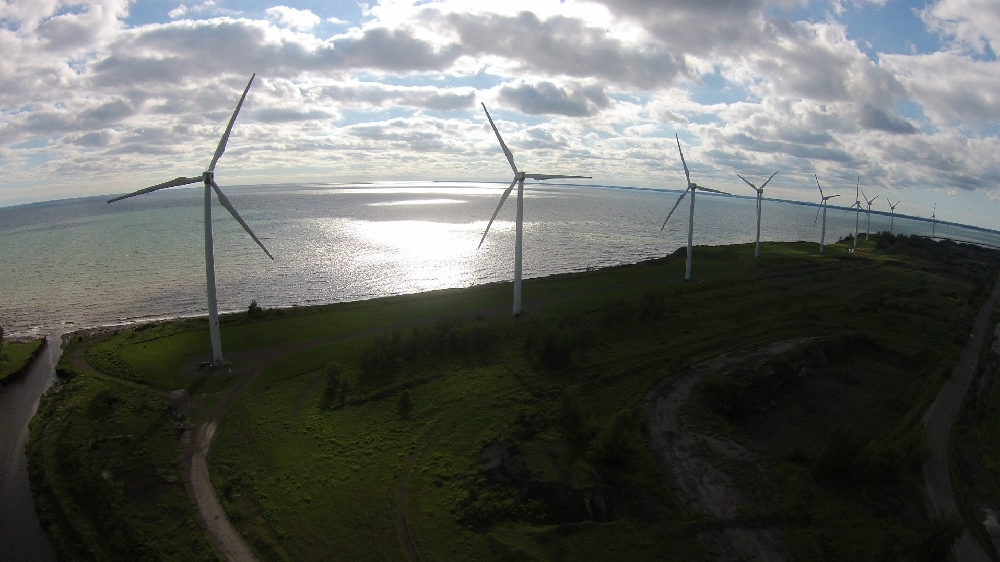
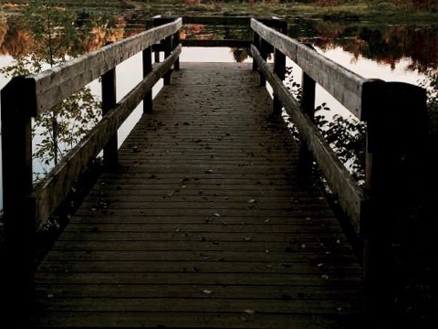
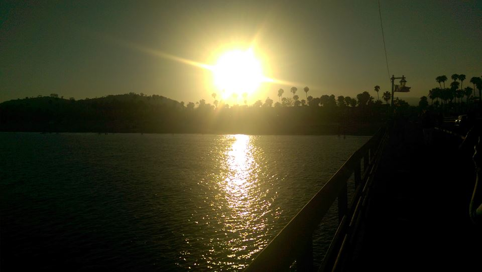
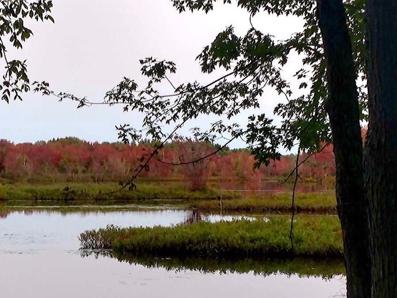
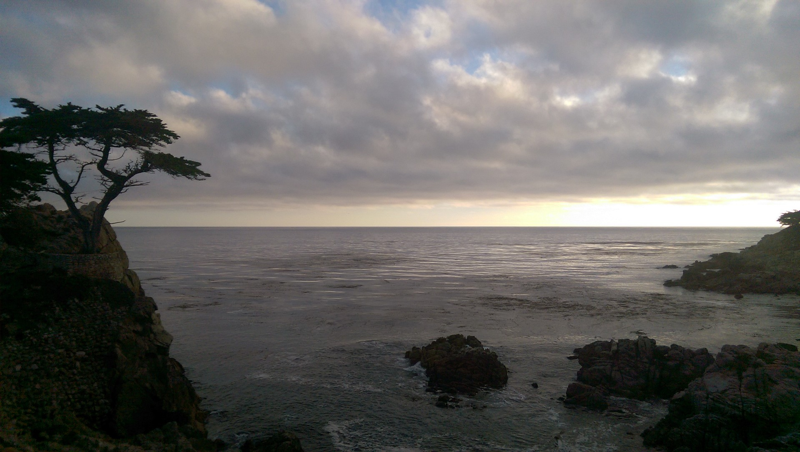
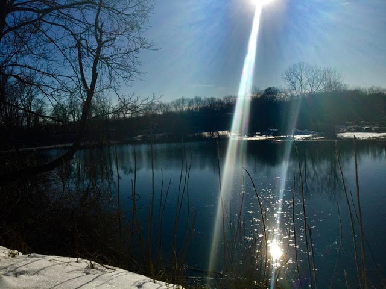

1 / 12

A picture I took from behind some trees along the Raquette. This
is probably one of the most vibrantly colorful shots in my collection.
2 / 12

This was taken when my walking path took me around Clarkson's
campus rather than its wilderness. I remember deliberately
focusing on the background to cause the lamps to appear more like
torches.
3 / 12

The river trail path. Strangely, there are several parts of
the segment I hike along where you cannot see a drop of the
Raquette unless you can pear between the forest trees along
its banks.
4 / 12

This photo was taken along the pacific highway.
Much of the highway is dotted with picturesque spots like this.
5 / 12

This was shot from TAC, as I was making my way back to Graham
Hall from statistics. I think it might have been the first real
snow of the new year.
6 / 12

This picture was taken at the steel winds site in Lakawana NY,
through the use of a drone. This is by far my favorite from my
collection of drone pictures.
7 / 12

This pier is one of the first landmarks as you make your way
around the river trail from the riverside apartments.
My housemate and I spent several minutes puzzling over how it was
supported since there were no beams going into the Raquette from
the pier.
8 / 12

This was taken in Santa-Barbara California.
Oddly enough, the sun sets over the land, not the sea in this
precariously positioned coast town.
9 / 12

One of my most recent shots. I took this one, and many others
in this collection while hiking around the river trail just in
back of my apartment.
10 / 12

This was taken after a blizzard had long passed.
I always loved the way a snowbank looks in a sunset.
11 / 12

Despite how bright the sun appears in the background; it was
incredibly dark due to the overgrowth of trees along the
rocky coastline where I took this.
12 / 12

I took this photo while getting my car from the repair shop.
This spot on the nearby lake doesn't show any sign of the
auto shop right behind me taking this shot.
A Splash of Color
A picture I took from behind some trees along the Raquette.
This is probably one of the most vibrantly colorful shots
in my collection.
Flares in the Drift
This was taken when my walking path took me around Clarkson's
campus rather than its wilderness. I remember deliberately
focusing on the background to cause the lamps to appear
more like torches.
The Forest Path
The river trail path. Strangely, there are several parts of the
segment I hike along where you can’t see a drop of the Raquette
unless you can pear between the forest trees along its banks.
Over the Pacific
This photo was taken along the pacific highway.
Much of the highway is dotted with picturesque spots like this.
Snowfall
This was shot from TAC, as I was making my way back to
Graham Hall from statistics. I think it might have been
the first real snow of the new year.
Sunset by the Steel Mills
This picture was taken at the steel winds site in Lakawana NY,
through the use of a drone. This is by far my favorite from my
collection of drone pictures.
Racing Drones
This does not contain any of my own content. But I enjoy high speed drone
racing so I thought you might too.
View over the Raquette
This pier is one of the first landmarks as you make your way
around the river trail from the riverside apartments.
My housemate and I spent several minutes puzzling over
how it was supported since there were no beams going into
the Raquette from the pier.
Santa-Barbara Boardwalk
This was taken in Santa-Barbara California.
Oddly enough, the sun sets over the land, not the sea in this
precariously positioned coast town.
From the Banks
One of my most recent shots. I took this one, and many others
in this collection while hiking around the river trail just in
back of my apartment.
Glistening Snow Drifts
This was taken after a blizzard had long passed.
I always loved the way a snowbank looks in a sunset.
The Tree and the Sea
Despite how bright the sun appears in the background; it was
incredibly dark due to the overgrowth of trees along the
rocky coastline where I took this.
Nearly Frozen
I took this photo while getting my car from the repair shop.
This spot on the nearby lake doesn't show any sign of the
auto shop right behind me taking this shot.